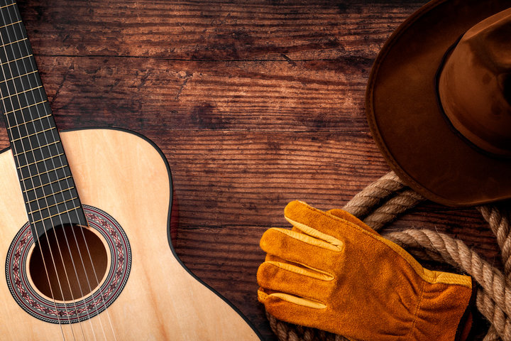
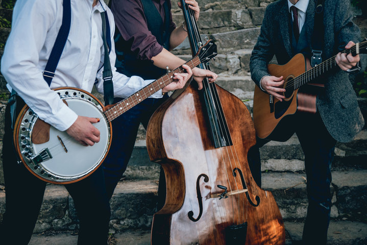

About Country Music
Country music, style of American popular music that originated in rural areas of the South and West in the early 20th century. The term country and western music (later shortened to country music) was adopted by the recording industry in 1949 to replace the derogatory label hillbilly music.
Ultimately, country music’s roots lie in the ballads, folk songs, and popular songs of the English, Scots, and Irish settlers of the Appalachians and other parts of the South. In the early 1920s the traditional string-band music of the Southern mountain regions began to be commercially recorded, with Fiddlin’ John Carson garnering the genre’s first hit record in 1923. The vigour and realism of the rural songs, many lyrics of which were rather impersonal narratives of tragedies pointing to a stern Calvinist moral, stood in marked contrast to the often mawkish sentimentality of much of the popular music of the day.
With the migration of many Southern rural whites to industrial cities during the Great Depression and World War II, country music was carried into new areas and exposed to new influences, such as blues and gospel music. The nostalgic bias of country music, with its lyrics about grinding poverty, orphaned children, bereft lovers, and lonely workers far from home, held special appeal during a time of wide-scale population shifts.
Source: britannica.com
Origins
During the 1930s a number of “singing cowboy” film stars, of whom Gene Autry was the best known, took country music and with suitably altered lyrics made it into a synthetic and adventitious “western” music. A second and more substantive variant of country music arose in the 1930s in the Texas-Oklahoma region, where the music of rural whites was exposed to the swing jazz of black orchestras. In response, a Western swing style evolved in the hands of Bob Wills and others and came to feature steel and amplified guitars and a strong dance rhythm. An even more important variant was honky-tonk, a country style that emerged in the 1940s with such figures as Ernest Tubb and Hank Williams. Honky-tonk’s fiddle–steel-guitar combination and its bitter, maudlin lyrics about rural whites adrift in the big city were widely adopted by other country musicians.
The same period saw a concerted effort to recover some of country music’s root values. Mandolin player Bill Monroe and his string band, the Blue Grass Boys, discarded more recently adopted rhythms and instruments and brought back the lead fiddle and high harmony singing. His banjoist, Earl Scruggs, developed a brilliant three-finger picking style that brought the instrument into a lead position. Their music, with its driving, syncopated rhythms and instrumental virtuosity, took the name “bluegrass” from Monroe’s band.
But commercialization proved a much stronger influence as country music became popular in all sections of the United States after World War II. In 1942 Roy Acuff, one of the most important country singers, co-organized in Nashville the first publishing house for country music. Hank Williams’ meteoric rise to fame in the late 1940s helped establish Nashville as the undisputed centre of country music, with large recording studios and the Grand Ole Opry as its chief performing venue. In the 1950s and ’60s country music became a huge commercial enterprise, with such leading performers as Tex Ritter, Johnny Cash, Tammy Wynette, Buck Owens, Merle Haggard, Patsy Cline, Loretta Lynn, and Charley Pride. Popular singers often recorded songs in a Nashville style, while many country music recordings employed lush orchestral backgrounds.
The 1970s saw the growth of the “outlaw” music of prominent Nashville expatriates Willie Nelson and Waylon Jennings. The gap between country and the mainstream of pop music continued to narrow in that decade and the next as electric guitars replaced more traditional instruments and country music became more acceptable to a national urban audience.
Source: britannica.com
Styles
Appalachian Folk
Appalachia is a region in the Eastern United States. You can’t mention country music without seeing how it’s rooted back to Appalachian Folk Music. This kind of music is a true melting pot of influences derived from African folk songs, English ballads, traditional Irish and Scottish music using fiddles, and African American blues. Without these early influences music, styles like bluegrass and early country music certainly wouldn’t exist. The fiddle and banjo are the most commonly used instruments and guitars were rarely used during most styles of music during this era.
Bluegrass
Originally derived from Appalachian Folk music, bluegrass has come into the limelight in a league of its own. What takes it a step further from early Appalachian folk is drawing influence from jazz and incorporating elements of improvisation. Instead of playing a song from front to back, musicians would play the same chord structure while a musician would make up their own melodies over it. Today, bluegrass is a widely followed genre with internationally esteemed festivals (Telluride Bluegrass Festival, RockyGrass) and bluegrass artists headlining some of the most coveted music venues in the world like Red Rocks, The Gorge, and beyond.
Classic Country
Classic country is mainly a term used by radio stations to describe country and western hits that have been made over the course of the last few decades. Usually, this can be divided into two formats. The first specializes in hits from the 20’s to 70’s focusing on artists from the style’s “Golden Age” like Hank Williams, George Jones, and Johnny Cash. The second focuses on the 60’s through 90’s with artists such as Waylon Jennings, Merle Haggard, George Strait, and Garth Brooks.
Outlaw Country
The outlaw country movement started in the 70s and 80s as a reaction to country music taking a “pop” spin with sleek production, generic structures, and commercializing the Nashville sound. The style uses throwback elements like honky tonk and rockabilly flavors and tends to have more introspective lyrics
Red Dirt
Red Dirt country music gets its name from the literal red dirt found in Stillwater, Oklahoma. The Red Dirt sound can be compared to the Muscle Shoals deep soul sound in the sense that it is so distinguishable, you almost can’t describe it in words. Red Dirt music has subtle rock elements and lyrical attitude that expand the realms outside of classic country.
Pop Country
This style often refers to pop artists who have decided to “go country” or country artists who aim to have a more mainstream, popularized sound. You can often find pop country songs on the mainstream Top 40 Billboard charts. American Idol also helped popularize this sub- genre in modern times.
Source: acountry.com
Key Artists
Jimmie Rodgers
Known as the “Father of Country Music,” was an instant national success. He is credited with the first million-selling single, “Blue Yodel #1,” and his catalog of songs, all recorded between 1927 and 1933, established him as the first preeminent voice in country music. Rodgers died from complications of tuberculosis in 1933. He was inducted into the Country Music Hall of Fame in 1961.
Johnny Cash
Known as the “Man in Black” for his striking onstage attire, Johnny Cash served in the U.S. Air Force and set off on a music career following his discharge in 1954. Performing with his bandmates the Tennessee Two, the singer became a superstar with the release of “I Walk the Line” in 1956. Cash continued making music all the way into the new millennium before dying of complications from diabetes in September 2003. His life and marriage to June Carter Cash were the basis of the 2005 biopic Walk the Line starring Joaquin Phoenix and Reese Witherspoon.
Loretta Lynn
Loretta Lynn, born in Butcher Hollow, Kentucky, rose to fame in the 1960s with the help of her friend Patsy Cline. Lynn’s songs didn’t shy away from political issues and often illustrated the everyday struggles of young women and mothers. Lynn’s 1970 autobiographical song “Coal Miner’s Daughter” later served as the title of her 1976 memoir and the Oscar-winning 1980 biopic starring Sissy Spacek as Lynn. The country singer died in October 2022 at age 90.
Willie Nelson
Willie Nelson, 90, became the face of the “outlaw country” genre, which challenged the conservatism prevalent in Nashville, Tennessee, and the industry writ-large. After initially starting off as a songwriter in 1960—earning as little as $50 per week—the Texan found mainstream success starting with his 1975 album Red-Headed Stranger. The 12-time Grammy winner also formed the supergroup Highwaymen with Johnny Cash, Waylon Jennings, and Kris Kristofferson. He also helped organize the first Farm Aid benefit concert in 1985.
Dolly Parton
Dolly Parton is one of the most beloved figures in music, with a pair of overall No. 1 songs and countless country hits such as “Jolene” and “Heartbreaker.” A member of both the Country Music Hall of Fame and Rock & Roll Hall of Fame, she is set to release her first rock-focused album Rockstar in November 2023. In addition to singing, the 77-year-old is also an author, founder of the Imagination Library, and an accomplished businesswoman who co-owns the popular Dollywood amusement park in Tennessee
Source: biography.com